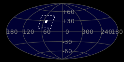
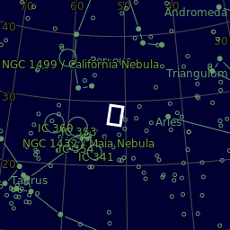
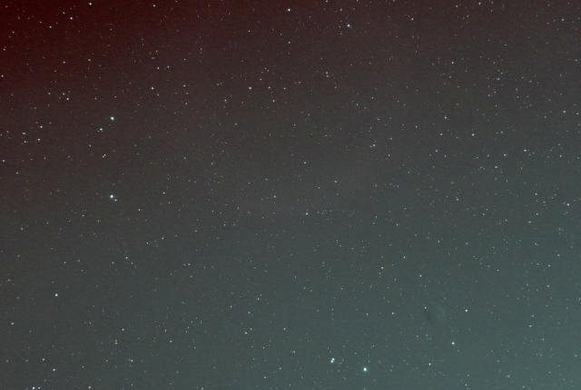
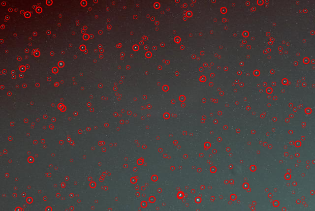

| Designations | M45 |
| Wikipedia | Pleiades |
| Location | Living Room Balcony |
| Coordinates | 97° 52' 02'' W 30° 12' 12''N |
| Elevation | 840 ft (256 m) |
| Date | Oct 28, 2024 |
| Time | 9:37 PM to 11:15 PM |
| Moon Illumination |
| Frames | One Shot Color (167 x 25sec) |
| Integration | 69min 35sec |
| ISO | 1600 |
| Celestial hemisphere | |
| Constellation | Taurus |
| RA center | 03h 27m 09.743s |
| DEC center | +27° 49' 13.654" |
| Feild radius | 1.767 deg |
| Pixel Scale | 3.94 arcsec/pixel |
| Orientation¹ | Up is 98.1 degrees E of N |
| Size | 2.94 x 1.97 deg |
¹May be incorrect (astronomy.net)


| Imaging Telescopes Or Lenses | SvBony SV503 80ED |
| Imaging Camera | Sony A58 |
| Guiding Telescopes Or Lenses | -- |
| Guiding Camera | -- |
| Mount | Skywatcher EQM-35 PRO |
| Filters | SvBONY CLS 2in |
| Accesories |
JJC Intervelometer, Anker Power |
| Software |
processing-001: SiriL |
| Main | |
| Contains | |
| Skybox | https://www.legacysurvey.org/viewer/?ra=51.7906&dec=27.8205&layer=unwise-neo6&poly=50.4308,29.1208,50.9470,26.2250,53.1186,26.5065,52.6595,29.4110,50.4308,29.1208 |
| Annotated Image² |  |
| Stars² |  |
²astronomy.net